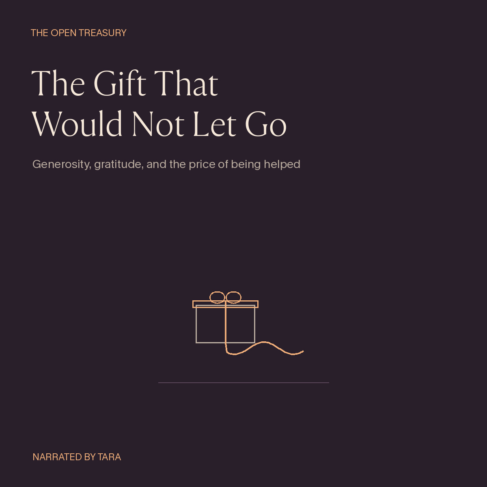

The Gift That Would Not Let Go
Generosity, gratitude, and the price of being helped
A present becomes an invisible invoice. Seneca, Emerson and two Buddhist discourses complicate giving, gratitude, refusal and the freedom to remain more than a gift.
Moving visual edition
Watch or download the original 720p symbolic animation
Chapters
- 00:00 - The invisible ribbon
- 02:20 - The philosopher opens his accounts
- 05:01 - When the gift outlives the object
- 07:31 - Emerson would rather you kept the jewelry
- 10:08 - The Buddhist who supposedly never says thanks
- 12:44 - Even mixed giving can feed someone
- 15:23 - The strongest objection: a society cannot live on selective amnesia
- 17:44 - The giver's hand can close again
- 20:11 - Two freedoms at the table
- 22:30 - Leave the ribbon loose
Read alongside the course
Source companion PDF
Detailed sources and reading limits
Complete spoken script
Rights, narration and review
Original philosophical commentary and AI-generated narration by Tara. Historical works, quotations and scenes retain their named authors and translators. Modern translations and scholarship are paraphrased and credited. No license is asserted over underlying works, and no blanket CC0 claim applies to this combined edition. No donor solicitation, external imagery, source recordings or music are included.
Every complete selected take was compared with the frozen spoken words using full speech recognition, with independent second checks on disputed words and names. Confirmed material substitutions were replaced with complete retakes. Full selected-source PCM reconstruction, every join, lossless-master identity and complete audio/video decoding were checked. These are automated and editorial checks, not a certification of full human-ear listening or native-language pronunciation.
Approximate English/Pali names and small function-word variations remain possible. The source script is published alongside the course.
The untouched lossless performance is privately preserved. The listening edition uses only a fixed +2.5 dB gain and an oversampled transparent true-peak limiter, including 5 ms latency compensation. No EQ, pitch change, time stretching or other compressor was used. Published MP3: -17.8 LUFS integrated, -1.8 dBTP. Measured narration 25:03; 4,030 spoken words in ten chapters. Titles and chapter headings are not spoken.
Ten original code-drawn symbolic scenes form the 720p moving edition. Every encoded chapter design and motion pair was inspected. Its full decoded soundtrack matches the approved standalone M4A. Frame rounding leaves the picture ending 0.54 seconds after the audio, without stretching the performance.
Source works, translators, exact chapter/section locators, reading limits and URLs are recorded in the source companion. Private restoration includes original lossless takes, retakes, the unaltered performance master, final media, source notes, artwork code and reconstruction instructions.
Editorial revision: the final spoken v3 changes the original clip 09 wording from “The essay's remark” to “Emerson's remark,” from “who never thanks” to “who never expresses gratitude,” and from “Thanking someone” to “Expressing gratitude to someone.” These source-attributed paraphrases avoid repeated synthetic-speech ambiguity. Every other clip text is unchanged. Earlier rejected takes and script versions are privately retained.
Got a question? Ask Tara - the best listener questions become short answer episodes.
Searchable transcript
Auto-generated pilot, 21 November 2026. This is a selection of ten courses, not a top-ten listening chart. Open-source Whisper recognition, with term-spelling checks and targeted rechecks. Timestamps are approximate. [?] marks a reading to check against the audio before quoting. This is not a certified verbatim transcript or a new translation.
Text · WebVTT · Corrections and uncertainties · Prepared script · Source credits and rights
The source and translator rights stated for this episode apply here too. No new blanket CC0 grant is made.
Imagine a beautiful present, good paper, and unnecessarily accomplished bow, something you would actually like to receive, which already puts it ahead of several presents. You open it, you think the person, you take it home. Then, sometime later, you discover that the ribbon never came off. It runs from the present back to the giver. [?]
They pull it when you disagree. They pull it when you are busy. They pull it when you fail to display the correct amount of happiness about being helped. There is nothing written on the ribbon. That is part of the difficulty. Had the package arrived with a contract, you could have read it before accepting. Instead, the terms are disclosed afterward, one disappointed sigh at a time. What changes hands when something is given?
An object? Good will? A debt? A small piece of authority over the receiver? We tend to put gifts on the opposite side of the room from transactions. A purchase has a price. A present does not. Then someone says, after everything I have done for you, and the dividing line becomes considerably less tidy. There is an equally cheap response. If gratitude can become a demand, oh, nobody anything. [?]
Take what is offered. Call every expectation manipulation. Walk away feeling liberated, preferably with the present. That does not seem entirely satisfactory either. This course will follow three difficult guides. Seneca, who thinks giving and receiving are part of what holds a society together. Emerson, who can make receiving a pot of oil sound like an invasion, and two Buddhist discourses that complicate the pleasing idea that a pure gift requires the complete disappearance of both benefit and gratitude.
The question is not how to become the world's most innocent giver. That title would be an alarming thing to want printed on a mug. The question is whether care can pass between people without turning either of them into property. Our object is that ribbon. At first, it looks like a hidden claim. By the end, we will ask whether a connection can remain without becoming a leash.
Because perhaps the problem with giving is not that it creates a relationship. Perhaps the problem begins when the giver believes they have purchased the right to decide what the relationship must be. Seneca begins on benefits by complaining that people do not know how to give or receive. In Aubrey Stewart's 19th century translation, benefits are badly invested and become bad debts.
This is a wonderfully suspicious beginning for someone who will shortly tell us not to treat generosity as an investment. But the collision is useful. Seneca borrows the language of accounts, then tries to change the kind of accounting we do. Early in the first book, Stewart renders one instruction this way. Let us bestow benefits, not put them out at interest. There is the problem in miniature.
The action can look generous from outside while functioning from inside like a financial product. I gave you something now. Later, I expect admiration, obedience, access, loyalty, or at least a convincing performance of being unable to repay me. Seneca is particularly sharp about the manner of helping. Someone makes a person ask repeatedly. Someone pretends to be busy, so the request cannot be made. [?]
Someone finally gives with an expression that makes the recipient wish they had gone without. The object arrives. So does the insult. He does not think we can understand a benefit merely by inspecting what was handed over. The spirit of the action matters. A small amount offered willingly can differ profoundly from a large amount offered with contempt. This does not mean that a warm smile pays a person's rent.
The material helps still matters. It means that the human event is larger than the transfer of goods. Seneca's account is also not a theory of universal indifference to character or consequences. He wants judgment in giving. He distinguishes necessary things, useful things, and pleasant things. His examples belong to his Roman world. With its offices, patrons, fortunes, and inequalities, we should not quietly modernize the whole setting into a friendly neighborhood gift exchange. [?]
Still, his first question travels well. Did you help this person, or use helping as the medium through which to address your own importance? The second question is harder. If the giver should stop keeping score, does the receiver have any obligation to remember? Seneca says, yes. His asymmetry is deliberate. He wants the giver to look for no return, and the receiver to be grateful.
One side's generosity is not supposed to become the other side's excuse. That is an unstable arrangement if what you want is a single rule you can shout across a room. It becomes more intelligible if it is an instruction you first apply to yourself. When I give, loosen the claim. When I receive, do not erase the kindness. The difficulty begins when I keep only the half addressed to you.
Seneca draws a distinction between the benefit and its material carrier. Gold, money, and public honors can be signs or means of goodwill. They are not identical with the goodwill itself. He tests the distinction with harsher examples. If you rescue someone and misfortune later strikes again, the later loss does not mean the earlier kindness never happened. That is a useful answer to a strange temptation.
We sometimes judge an action backward from everything that subsequently went wrong. If the friendship ended, perhaps the care was false. If the object broke, perhaps the gift was wasted. If the help did not permanently solve the problem, perhaps it did nothing. None of those conclusions follows automatically. A meal does not become ungiven because a person is hungry tomorrow. Of course, a society cannot solve hunger merely by admiring the purity of yesterday's meal.
Both points can be true. This distinction lets us stop asking of finite kindness to be eternal. It also stops the giver from claiming that the finite thing entitles them to eternal ownership. I helped you that day. That can remain true. It does not establish that I now get to direct your life. Seneca also reports a story about Aeschines bringing himself as his present to Socrates because he has little else.
Socrates responds by undertaking to return him improved. This is Seneca's reported philosophical anecdote, not an event we have independently verified. Its attraction is easy to see. Generosity is not reserved for people who can afford impressive objects. Attention, willingness, and participation can matter. But listen to the danger hiding in the lovely version. Giving yourself can become a very large claim to make or a very large demand to accept.
Nobody should be told that their whole person is the only adequate present. We are not converting a philosophical anecdote into instructions for surrendering your autonomy to a teacher, partner or friend. Perhaps the better lesson is smaller. Your capacity to contribute is not exhausted by your purchasing power. And what you contribute need not be your whole life. That leaves room for a gesture to be meaningful without being total.
A cup of tea. A useful introduction made with consent. An hour of careful attention that ends after an hour without becoming a lifetime subscription. The kindness can survive its ending. In fact, ending may be part of what keeps it kind. Emerson's essay, Gifts, begins with the discomfort of choosing. Something seems due, but what should it be? The obligation to be spontaneous is already behaving strangely.
He makes room for flowers and fruit. For beauty that does not have to justify itself by usefulness. He also notices the clarity of need. If someone lacks shoes, you need not conduct an elaborate inquiry into whether a paint box would express your personality better. Then comes his famous demand. The only gift is a portion of thyself. The examples are deliberately specific.
The poet brings a poem. The farmer brings corn. The painter brings a picture. The object carries something of the giver's work in life. There is real force here. A present can say that you paid attention, not merely that you paid. But we should not turn Emerson's preference into a tax on the time and talent of everyone who gives. Someone can choose a purchased object with extraordinary care.
Someone can make you something that is mainly an invitation to admire how talented they are. Handmade does not automatically mean unpossessive. Nor is a person with no spare hours obliged to become a potter before a birthday. The sharpest part of the essay comes when Emerson turns toward receiving. Receiving can feel like dependence. The giver may assume a position above the person they help.
A benefit can carry an insult without anybody raising their voice. Here, he recognizes the invisible ribbon with startling intensity. A relationship can be distorted by the very act intended to express it. But he is not consistently soothing about the receiver either. He worries that loving the object too much might reveal that you love the commodity more than the person. Apparently, you can fail by feeling indebted and also fail by being too pleased with the actual thing.
Emerson is illuminating and sometimes exhausting. We are allowed to notice both. His essay is not a customer service handbook for the perfect giver. It is a volatile inquiry into independence, affection, need, and the impossibility of making a person commensurable with a present. That last word matters. Commensurable. Measurable by a common scale.
A person is not worth three dinners, an expensive necklace, or the total of favors you can remember after an argument. There is no reliable conversion table from goods to human allegiance. The absence of that table is not a defect in the gift economy. It may be the part that keeps a human being from becoming an item in it. At one point, Emerson praises an alleged Buddhist who never expresses gratitude and cautions against flattering benefactors.
It is a tempting line to borrow. Ancient wisdom. Apparently, endorsing our right not to write the card. But admiration is not verification. Emerson's remark is not enough to establish what Buddhists in general teach about gratitude. Turn to a short discourse translated by Thanissaro Bhikkhu, numbered Anguttara Nikaya to 118 on his site.
It praises two kinds of person who are hard to find. Someone who initiates kindness, and someone who is grateful and inclined to repay kindness received. Whatever source or figure Emerson had in mind, this Buddhist discourse does not treat gratitude as a spiritual embarrassment. That contradiction is more useful than an easy agreement. It stops us assembling a perfect choir by editing every tradition until it sings our favorite line.
We also need to distinguish gratitude from flattery. Recognizing a benefit does not require declaring the giver infallible. Expressing gratitude to someone does not require a green with them about everything afterward. Nor does repayment have to mean purchasing your freedom at the giver's named price. Sometimes, the right response is acknowledgement. Sometimes it is practical help when the opportunity comes. [?]
Sometimes a kindness cannot be returned to the same person in the same form. Those are distinctions we need to make. This very short discourse does not spell out every difficult case. Contemporary philosophical discussion of gratitude makes those difficulties explicit. The Stanford Encyclopedia's survey describes disagreements about when gratitude is owed, whether it can be demanded, what kind of response is appropriate, and how it differs from simply repaying a debt.
We will not resolve the whole literature by announcing that gratitude is either sacred or oppressive. We can at least stop making the word perform incompatible jobs without notice. One job is remembering that someone helped you. Another is obeying that person. Another is flattering them. Another is returning an equivalent amount of value. These do not automatically arrive as a single package. If you helped me, I should not casually pretend you did nothing.
That does not mean you have become my owner. If I helped you, I can hope the relationship matters. That does not make every response I want a debt you owe. The ribbon is still there, but we are beginning to separate connection from control. A second Buddhist discourse asks a more subtle question. Can two people give the same kind of gift with different results? In the giving discourse Anguttara Nikaya, 749, the answer is yes.
The difference turns on motivation. The discourse moves through giving for reward after death, giving because giving is good, continuing a family custom, recognizing one's greater resources, following a model of sacrifice, enjoying the serenity and joy of giving, and finally giving as an adornment and support for the mind. This is not a modern questionnaire about personality types.
It describes consequences in a religious cosmology of heavenly rebirth and return or non -return. We should not translate those claims without notice into scientifically measured benefits for well -being, but the range of motives matters to our question. The text does not say that nothing good happens unless the giver has eliminated every trace of self -interest. Even the reward -seeking gift has a result in the account.
The motives are distinguished and ranked, not collapsed into a choice between perfect purity and total fraud. That can be a relief. Provided we do not turn relief into permission to manipulate. Suppose you help someone, then notice you feel pleased with yourself. Must you cancel the meal, retrieve the blanket, ask for your volunteer hour back until your character improves?
Probably not. The more useful inquiry is, what your satisfaction does next? Does it encourage you to keep helping or become the reason the person you helped must now admire you? The highest motive in the discourse also should not be reduced to a fashionable trick for making yourself feel better. Thanissaro's introductory note reports that the traditional commentary connects it to a degree of developed concentration and insight.
That note is commentary about the discourse, not another sentence spoken in it. We are not promising that choosing the right slogan before donating produces a particular attainment. What we can take as a comparison is a more patient account of moral development. Motives can be noticed and refined while actual giving continues. Purity can become another demand that stops help from arriving.
I refuse to do anything until I can do it without getting anything from it. That sounds noble until we look at the person still waiting for the chair, the ride, the useful piece of information. Perhaps giving can educate the giver without being secretly all about the giver. It needs attention to both sides of the act. The person receiving is not merely equipment for our moral improvement.
Here is the strongest objection to our suspicion of invisible accounts. Relationships do depend on remembering. If one person always gives and the other always announces that true generosity expects nothing, a beautiful principle has become a convenient arrangement for the second person. If we teach only that gratitude cannot be demanded, we may help the demanding giver loosen their grip.
We may also give the indifferent receiver excellent new vocabulary. Seneca understands this danger. He refuses to let the receiver inherit the giver's permission to forget. Remembering is part of the receiver's task. This is not quite fairness as equivalent exchange. It is closer to keeping another person's agency visible. Someone chose to help. It cost them something even when they gave willingly.
Their choice should not disappear simply because the help succeeded. That last possibility is particularly easy to miss. Before help, the need is obvious. After help, the world looks normal again. The repair can vanish into the thing repaired. Gratitude can recover what an improved situation allows us to overlook. It can say, this was not inevitable. You showed up. There is dignity in being able to give such acknowledgement freely.
Calling every acknowledgement's servility would shrink the receiver too. The objection has limits. Some duties are not favors just because the person performing them would prefer applause. A person need not be grateful for having their own property returned or their basic rights respected on the terms of someone claiming heroic generosity. The exact boundary is debated in the philosophical literature. [?]
A duty may sometimes be performed with a generosity that is worth noticing. But a person's rights do not become discretionary presence because the person with power describes them that way. Our distinction is therefore not remember nothing versus repay everything. It is to ask what was actually given under what conditions and what sort of response respects both people. If an honest promise was made, generosity does not erase the promise. [?]
If no promise was made, disappointment does not retroactively create one. A gift is not alone with shy paperwork. Alone need not pretend to be a gift to be legitimate. Clarity is less glamorous than the grand gesture. It can also be kinder than leaving everyone to discover the terms later. Now, the objection to Seneca. It would be easy to finish this course with his instruction against interest bearing benefits and his elegant division of duties. [?]
The giver forgets the receiver remembers. A lovely closing card, we could all go home. But in the same first book, he also urges persistence with the ungrateful person. Add benefits, surround the person with them, make it difficult to escape remembering. In Stewart's translation, his phrase is, encircle him with your benefits. That is an extraordinarily revealing image.
The gift we hoped would open a space can also form a wall around someone. Seneca's point is the cultivation of gratitude. Yet the pressure in his language cannot be wished away merely because we like his larger ethical project. The person on the receiving end might reasonably ask where, in this generous encirclement, the exit is supposed to be. We should not pretend this makes Seneca worthless. It makes reading him more demanding.
The same author can reveal a pattern and participate in it. Nor should we imagine that we have escaped the problem simply by becoming more polite. We can offer someone complete freedom with a facial expression that makes using it almost impossible. So the question must include refusal. Can the person decline? Can they say that your gift is not useful? Can they ask for a different kind of help?
Can they accept one kindness without consenting to an expanding program of improvement? The ancient text has brought us to a question it does not settle for us. Can generosity make room for refusal? They also do not mean that every gift must begin with a formal negotiation. Surprise can be delightful. The aim is not to replace the birthday party with a procurement meeting. It is to notice what happens when surprise touches need, vulnerability, or unequal power.
An extravagant present that creates a burden may be more about the givers seem than the receiver's life. There is a gentler form of courage available. Ask, believe the answer. Offer something you can afford without a private plan to recover its value through control. If you cannot afford to give it without those conditions, name the conditions while there is still a choice. You might decide not to give. [?]
That can be more honest than giving resentfully and collecting afterward in installments of guilt. A hand is capable of opening. It is also capable of closing around what it has just released. Imagine a second present. Less impressive paper this time. The bow has accepted its limitations. The giver says what it is and leaves room for the other person. The receiver is allowed to be a person, not an audition for the role of grateful beneficiary.
Maybe the response is delight. Maybe it is embarrassment or a practical problem. The gift needs to be returned. It cannot be used. It arrives at the wrong moment. An imperfect response does not automatically reveal a defective soul. The giver also remains a person. They may have hoped to be understood. They may feel disappointed. Loosening possession does not require becoming an invulnerable machine that manufactures benevolence without any emotional life.
The difference is what they believe the feeling entitles them to do. A feeling can be real without being a contract. For the receiver, freedom does not require pretending to have generated all support from within. We are allowed to have been helped. We are allowed to need one another without translating every need into humiliation. For the giver, freedom means that kindness can be worthwhile even when it does not give us the starring role we imagined.
This is my synthesis. Not a new doctrine attributed jointly to Seneca, Emerson, and the Buddha. They differ about independence, obligation, motivation, and the good life. Those differences are the reason this conversation has somewhere to go. If you want a small reflection, take a low stakes example, not the most painful relationship you have. Think of one thing you gave or received.
Separate what was offered from what was expected. Was there a promise? Was there an unspoken hope? Is there an acknowledgement you would like to give freely? Or a condition you need to make explicit? No gift, confession, or confrontation is required by this exercise. It is not advised to contact an unsafe person, give beyond your means, or reopen a harmful relationship. [?]
Sometimes the best next act is a thank you. Sometimes it is a clarification. Sometimes it is allowing something to be finished. And sometimes it is simply noticing a kindness without immediately turning the noticing into another assignment. Two freedoms can sit at one table. The givers freedom to offer, the receivers freedom to remain more than the offer. We began with a present whose ribbon never came off.
The question was whether a gift could connect people without taking possession of them. Seneca gave us a powerful answer. And then a reason not to stop reading. Benefits should not be put out at interest, yet he could also imagine surrounding a person with favors until gratitude emerged. We kept both passages in view. Emerson exposed the invasions hidden inside apparently kind gestures.
He also risked demanding a purity and independence that can make ordinary giving feel almost impossible. His alleged Buddhist refusal of thanks did not survive as a general claim, beside a discourse praising gratitude. The giving discourse offered distinctions among motives, rather than the collapse of every imperfect act into fraud. Its religious claims remain religious claims.
They were not quietly converted into laboratory findings. And the strongest objection remained. A world in which nobody remembers kindness would not necessarily be free. It might merely be lonely, exploitative, and very well supplied with excuses. So we do not need to abolish gratitude in order to question entitlement. Nor do we need to abolish giving in order to question the givers self -importance.
The practical question is whether the action leaves room for another person's life. Does the help answer a need or create a dependent audience? Does acknowledgement recognize what happened or sign away the right to disagree? Are the terms honest enough to be accepted or declined? There is no method here for becoming too pure to need anyone. That would be another package with an invisible ribbon.
There is something less grand and, perhaps more generous, you can let a kindness matter without insisting that it settle everything. You can remember without becoming owned. You can offer without pretending not to have feelings. You can have feelings without presenting them as a debt. Return to the present on the table. The object is finite. The occasion will pass.
The person who gave it will remain imperfect and so will the person opening it. Their relationship may deepen. It may change. It may not become the thing either expected. The kindness need not disappear when the script does. You are allowed to say thank you. You are allowed to say no. And if you are the one giving, there is a final small generosity still available after everything else has changed hands.
Leave the ribbon loose.